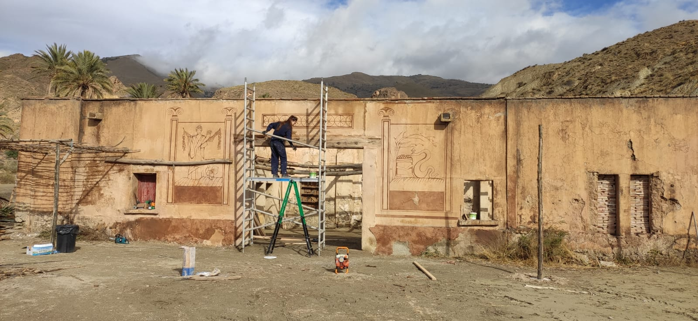

ARTISTIC PAINTING BACKGROUND

Fine Arts, UCM — Universidad Complutense de Madrid
Art Direction Master, ESCAC — Escola Superior de Cinema i Audiovisuals de Catalunya
Training in Cultural Management, Nogueras Blanchard Gallery
In my work, I develop artistic proposals through painting, creating artwork for sets from visual references or concepts.
→ EXPERIENCE